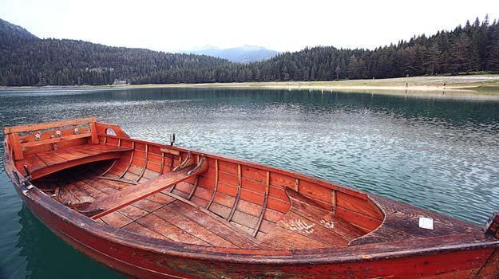

Anamika Lake

Umiam Lake ( commonly known as barapani lake ) is a reservoir located in the hills 15 km to the North of Shillong in the state of Meghalaya, India. It was created by damming the Umiam river in the early 1960s. The principal catchment area of the lake and dam is spread over 220 square km.

HOW TO REACH ?
Nearest Airport: Shilong
Nearest Railway Station:Shilong
Nearest Bus Stand:Shilong